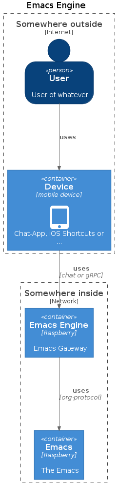

This week I participated at the emacs FFM Meetup where we talked about the idea of a chat bot extension for org-mode. I had to leave early, so I do not know what the results of the discussion were.
Nevertheless I did some thought on my own:
I would like to control everything I do in emacs from my mobile while I'm on-the-go - not only org-mode related things.
On the emacs side one could utilise org-protocol which can be extended with additional protocol-handlers and despite the name it can also be used for things beside org-mode.

The protocol could be fairly simple and the command could be reduced to: mode which is the sub-protocol, action and data.
Some examples (not url-encoded for better readability):
org-protocol://sub-protocol?key=val&key2=val2 org-protocol://ledger?action=add&data=value:5,00€;account1:cash;account2:snacks;payee:Not Starbucks;comments:fine coffee org-protocol://cal?action=list&data=from:today;for:1week
Any results could be written to a special file which would be used to inform the user1.
-
The middleware-component which is here called
- a chat bot
- a gRPC client
- a REST client
emacs-engine could be e.g.
So it would be possible to integrate emacs-engine into workflows implemented by Apple Shortcuts.
- Therefore the communication channel used by the user must provide a backchannel. ↩